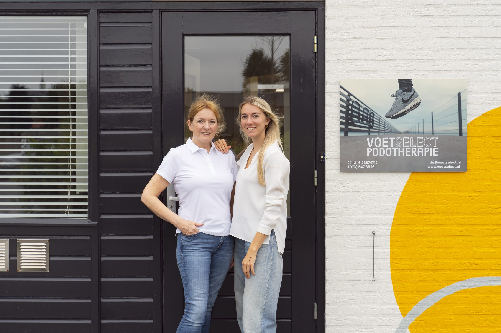
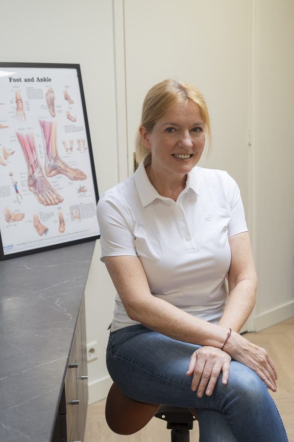
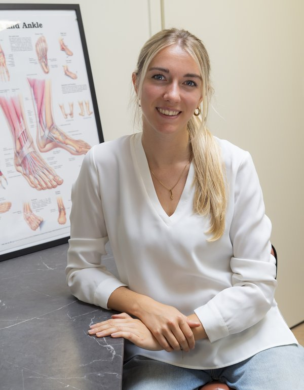

Over ons
Ons team
Persoonlijk, deskundig en altijd betrokken. Ontmoet de mensen achter VoetSelect.

Oprichtster & hoofdbehandelaar
Corine Voets
(Sport)podotherapeut & acupuncturist
Corine studeerde in 1995 af aan Fontys Podotherapie in Eindhoven en opende direct daarna haar eigen praktijk in Schijndel. Aansluitend werkte zij een jaar in een revalidatiekliniek op Curaçao, waar zij zich voornamelijk bezighield met de behandeling van diabetische patiënten.
In 2006 specialiseerde Corine zich in biomechanica en het digitaal aanmeten van orthopedische schoenen. Zij volgde masterclasses in klinisch redeneren, drukmeetanalyse en in-shoe bewegingsanalyse. In 2017 rondde zij de post-HBO opleiding Sportpodotherapie af, en in mei 2023 behaalde zij haar diploma Acupunctuur — waarmee zij haar patiënten nóg breder kan behandelen.
Corine is geregistreerd bij de Nederlandse Vereniging van Podotherapeuten (NVVP) en heeft een AGB-code voor directe vergoeding via de zorgverzekeraar.
Student & praktijkassistente
Lonneke Boselie
Student Podotherapie — Fontys Hogeschool Eindhoven
Lonneke bevindt zich in het vierde en afrondende jaar van de Podotherapie opleiding aan Fontys Hogeschool Eindhoven. Naast haar studie werkt zij als praktijkassistente bij VoetSelect, waar ze al snel een vertrouwd gezicht is geworden voor onze patiënten.
Als echte duizendpoot combineert Lonneke studiewerk, patiëntenzorg en praktijkondersteuning soepel met elkaar. Leergierig en enthousiast — zij brengt frisse energie en een betrokken houding naar ons team.
Misschien tot ziens in de praktijk!

Waarom VoetSelect
Waarom kiest u voor ons?
Bij VoetSelect Podotherapie bent u aan het juiste adres. Al meer dan 25 jaar specialist in podotherapie, met oog voor wat u écht nodig heeft.
Snelle service
Wachttijden houden wij zo kort mogelijk. Op maat gemaakte zolen kunnen wij zelfs dezelfde dag (binnen 24 uur) leveren.
Geavanceerde drukmeting
Wij beschikken over een geavanceerd in-shoe meetsysteem dat elke beweging van uw voet nauwkeurig vastlegt — voor een perfect behandelplan op maat.
Slippers op maat
Naast reguliere inlegzolen bieden wij ook slippers volledig op maat aan — ideaal voor thuis of op vakantie, zonder in te leveren op ondersteuning.
Onze specialisaties
Wij behandelen onder meer
- Hielspoor en fasciitis plantaris
- Knieklachten (runner's knee, patellofemorale pijn)
- Platvoeten en holvoeten
- Heupdysplasie en beenlengteverschil
- Diabetische voet en ulcuspreventie
- Sportletsels (enkelverzwikking, achillespees)
- Hallux valgus (scheve grote teen)
- Hoge drukplekken en eeltzones
- Rugklachten door voetmechaniek
- Kindervoeten en groeistoornissen
- Ingroeiende teennagels
- Reumatische voetklachten
Klaar om een afspraak te maken?
Corine en Lonneke staan voor u klaar. Neem contact op of maak direct een afspraak.
Maak een afspraak